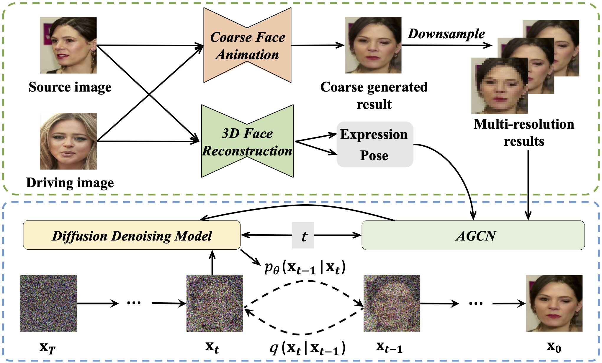

|
Sicheng Gao
I am a master's student at Beihang University (BUAA), supervised by Prof. Baochang Zhang. My research focuses on Computer Vision and Machine Learning, including Image and Video Super-Resolution, Generative Models, 3D Scene Rendering, Model Compression and Medical Image Analysis.
Email /
CV /
Github
|
|
|
|
Implicit Diffusion Models for Continuous Super-Resolution
Sicheng Gao*, Xuhui Liu*, Bohan Zeng*, Sheng Xu, Yanjing Li, Xiaoyan Luo, Jianzhuang Liu, Xiantong Zhen, Baochang Zhang
CVPR, 2023
paper / code
When diffusion models meet implicit neural representations.
|
|
|
MagFormer: Hybrid Video Motion Magnification Transformer from Eulerian and Lagrangian Perspectives
Sicheng Gao*, Yutang Feng*, Linlin Yang, Xuhui Liu, Zichen Zhu, David Doermann, Baochang Zhang
BMVC, 2022
paper / code
Inspiration from fluid mechanics.
|
|

|
Face Animation with an Attribute-Guided Diffusion Model
Bohan Zeng*, Xuhui Liu*, Sicheng Gao*, Hong Li, Boyu Liu, Yanjing Li, Jianzhuang Liu, Xiantong Zhen, Baochang Zhang
Rejected by CVPR, 2023
arXiv / code
The first face animation method by diffusion models.
|
The website template is borrowed from here.
|
{kind=link}